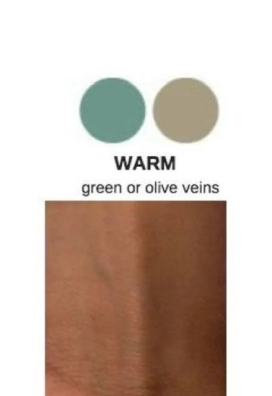
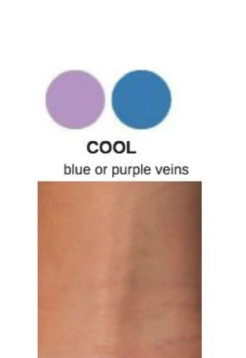
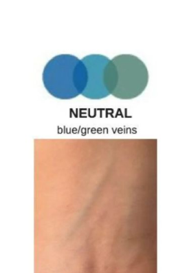

The Ultimate Guide to Your Unique Glow
Understanding your skin is the first step toward true confidence. While your skin tone (light, medium, or deep) may change with the seasons or sun exposure, your undertone remains constant throughout your life. It is the subtle hue beneath your skin's surface that determines which shades of makeup, clothing, and jewelry make you truly shine.
Why Undertone Matters?
Have you ever worn a lipstick that looked beautiful on the tube but made your face look dull? That is likely due to a mismatch in undertones. At M3-Shade, we categorize these undertones into three primary families:
| Undertone | Visual | Description |
|---|---|---|
| Warm Undertone |  |
Your skin has hints of yellow, peachy, or golden undertones. |
| Cool Undertone |  |
Your skin leans toward pink, red, or bluish hues. |
| Neutral Undertone |  |
You have a balanced mix of both warm and cool tones, making you versatile for almost any color palette. |
Methods to Discover Your Match
1. The Jewelry Test
Reach for your favorite accessories. If Gold jewelry makes your complexion look more radiant and healthy, you are likely Warm. If Silver or platinum looks better against your skin, you are likely Cool. If you look equally stunning in both, welcome to the Neutral family!
2. The Vein Test
The easiest way to identify your undertone at home is by looking at the veins on the inside of your wrist under natural light:
- Green Veins: If your veins appear greenish, you have a Warm undertone.
- Blue/Purple Veins: If your veins look blue or purple, you have a Cool undertone.
- Colorless/Mixed: If you can't quite tell or see both colors, you are Neutral.
3. Sun Exposure
Observe how your skin reacts to the sun. If you burn easily and turn pink or red, you probably have a Cool undertone. If you tan easily without burning, your undertones are likely Warm.
Pro Beauty Tip
Always conduct these tests in Natural Sunlight. Artificial indoor lighting can cast yellow or blue tints that may lead to an inaccurate result. Your true glow is best seen under the sun!
Choosing the right shade isn't just about the surface; it's about the soul of your skin. Let M3-Shade guide you to the perfect reflection of your natural beauty.